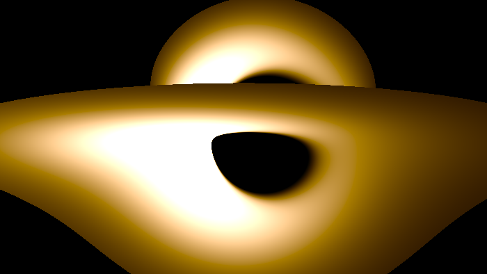
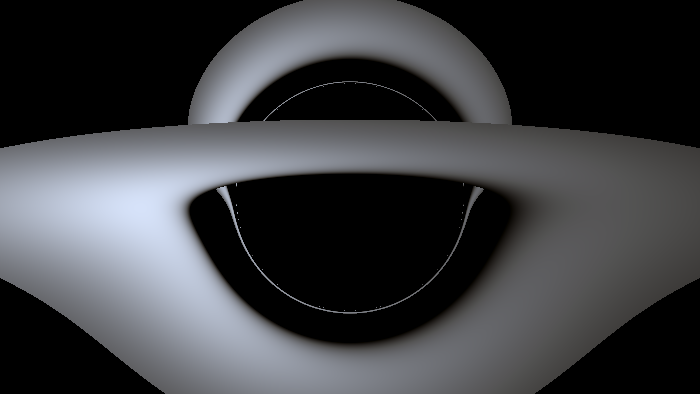
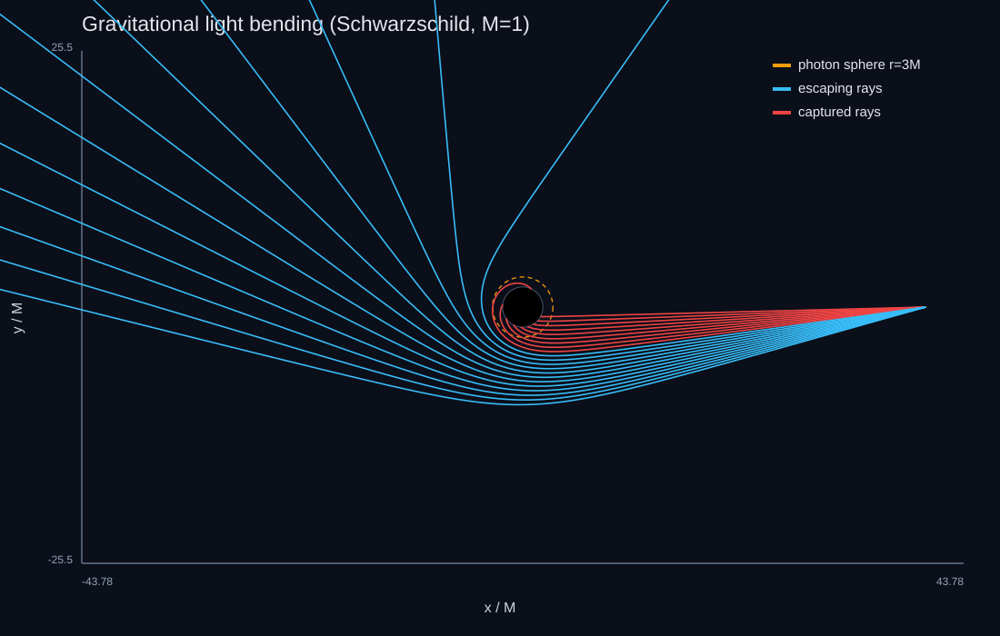
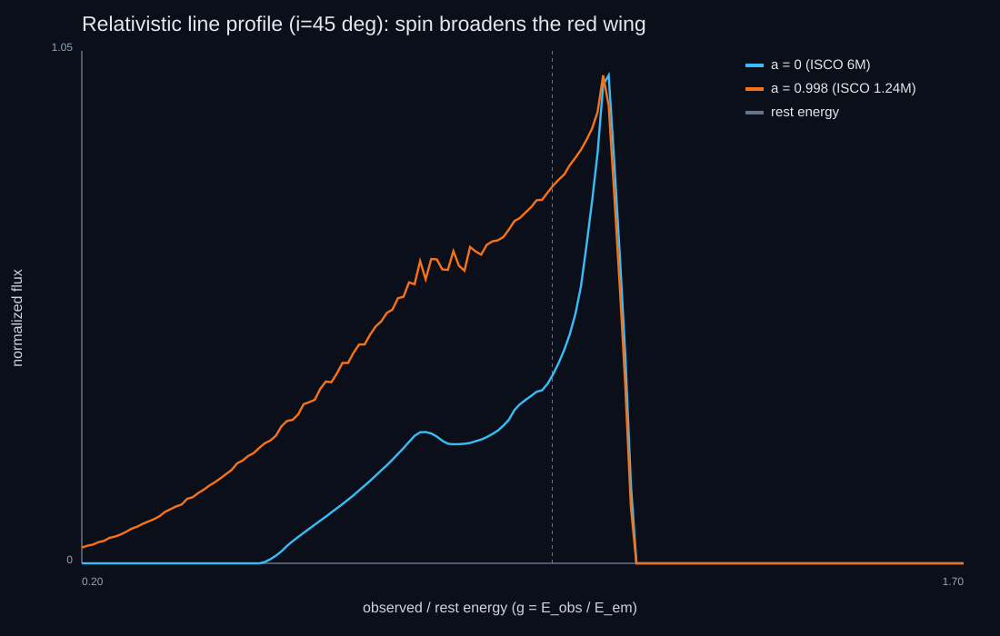

Kerr Black Hole Ray Tracer
A research-grade GR ray tracer for a spinning Kerr black hole with a relativistic accretion disk — physically correct images, light bending, and spectra.
Light bending around a Schwarzschild black hole: each ray is a null geodesic. Drag the closest approach inward — rays inside the critical impact parameter b_c = 3√3 M (the shadow edge) plunge in; the rest deflect.

The same machinery as EHT codes
Everything is in geometrized units G = c = M = 1. The lab implements the Kerr metric in Boyer-Lindquist coordinates and its closed-form inverse, then traces null geodesics via the Hamiltonian H = ½ g^{μν} p_μ p_ν with an adaptive Dormand-Prince 5(4) integrator and numerical metric derivatives — the same approach ipole, RAPTOR, and GYOTO are built on, written here in dependency-free C++.

How an image is made
A ZAMO-tetrad pinhole camera launches one photon per pixel inward and traces it backward to the horizon, the disk, or infinity. Disk hits are shaded with the relativistic redshift g = ν_obs/ν_em, a Page-Thorne temperature, and the Lorentz-invariant I_ν/ν³ — brightness ∝ g⁴T⁴, color a Planck spectrum. HDR output plus Python tone mapping handles the enormous dynamic range once.

Validated, not fudged
The console asserts the answers against closed forms: horizon r₊ = 2M and ISCO = 6M at a=0, photon orbit at 3M, Schwarzschild shadow edge at 5.196M = 3√3, ray conservation of energy and angular momentum, the Carter constant to 1e-8. The broad-line red wing reaching g ≈ 0.25 at a=0.998 versus g ≈ 0.5 at a=0 is exactly the iron-Kα spin measurement used on real AGN like MCG-6-30-15.

This chapter is drawn from the physics-lab study notes and renders. The longer write-ups and project essays live on the blog.